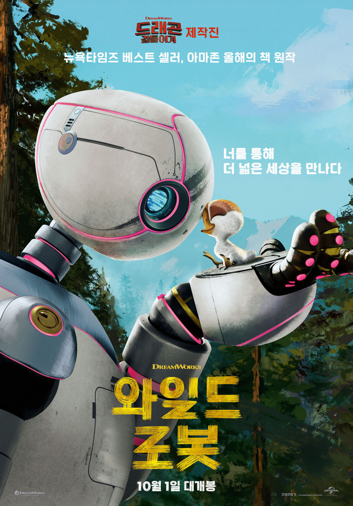
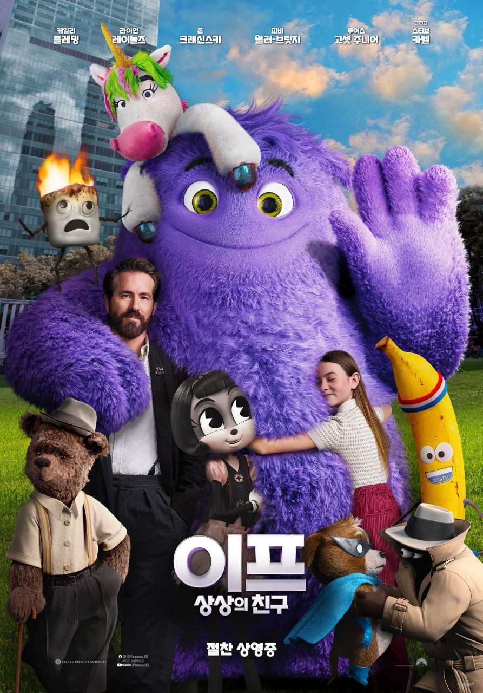
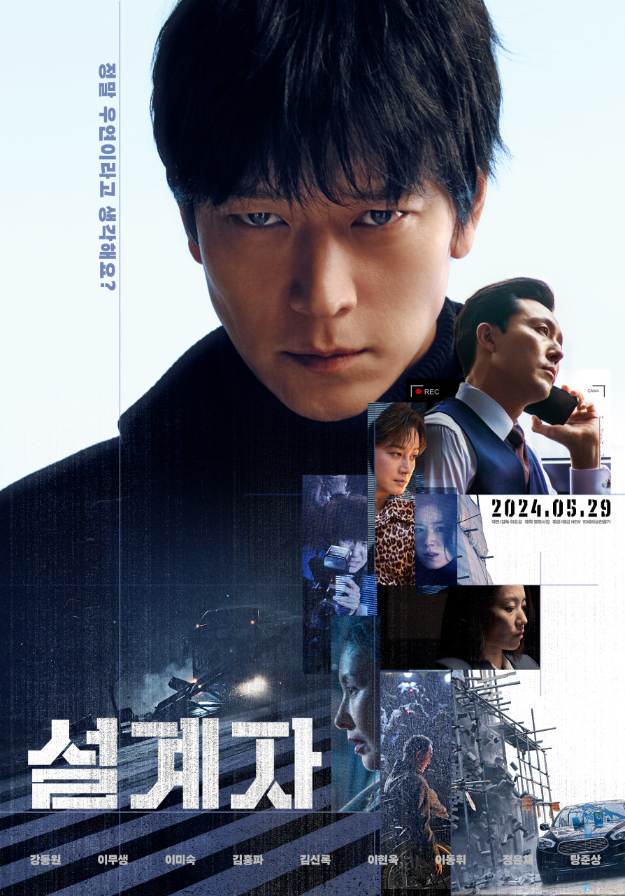

-
Title 크레용 신짱: 전격! 부타노히즈메 대작전 Release 1998.00.00 Runtime 99분 Age Rating 전체 관람가 Director 하라 케이이치 Cast 야지마 아키코, 나라하시 미키, 후지와라 케이지, 미츠이시 코토노, 겐다 테쇼 전대미문의 바이러스 부리부리 꿀꿀로 전 세계 컴퓨터를 장악하여 세계를 정복하려는 악의 집단 돼지 발굽을 막기 위해 세계 평화를 수호하는 비밀 조직 SML은 암호명 슈퍼 모델을 보내 바이러스 디스크를 찾아오게 한다. 무사히 임무를 완수한 슈퍼 모델은 돼지 발굽의 비행선에서 탈출해 한강으로 떨어지고, 마침 유람선을 타고 소풍을 나온 짱구와 친구들을 만나게 된다. 그러나 짱구와 친구들, 그리고 슈퍼 모델은 디스크가 도난 당한 사실을 알고 추적해 오던 돼지 발굽에게 납치된다. 사고 소식을 들은 슬퍼하던 짱구 아빠와 엄마는 SML의 비밀요원 근육맨의 방문을 받는다. 근육맨은 자신이 아이들을 구출해 오겠다고 하지만 짱구를 직접 찾겠다고 결심한 아빠, 엄마는 근육맨에게 변비약까지 먹이며 소동을 벌인 끝에 근육맨의 비밀 서류를 손에 넣고, 짱구를 찾아 홍콩에 있는 돼지 발굽의 배에 잠입한다. 한편 슈퍼모델은 아이들을 캡슐에 태워 탈출시키는 데 성공하지만 황량한 사막에 떨어진 아이들은 마을을 찾아 헤매다 또다시 돼지 발굽에게 잡히게 된다. 결국 위기에 처한 아이들을 구하기 위해 슈퍼 모델은 돼지 발굽에게 디스켓을 넘겨주는데.Date Time Theater Screen -
Title 시간이탈자 Release 2016.04.13 Runtime 107분 Age Rating 15세 이상 관람가 Director 곽재용 Cast 임수정, 조정석, 이진욱 1983년 1월 1일, 고등학교 교사 지환(조정석)은 같은 학교 동료이자 연인인 윤정(임수정)에게 청혼을 하던 중 강도를 만나 칼에 찔려 의식을 잃는다. 2015년 1월 1일, 강력계 형사 건우(이진욱) 역시 뒤쫓던 범인의 총에 맞아 쓰러진다. 30여 년의 간격을 두고 같은 날, 같은 시간, 같은 병원으로 실려간 지환과 건우는 생사를 오가는 상황에서 가까스로 살아나게 되고, 그 날 이후 두 사람은 꿈을 통해 서로의 일상을 보기 시작한다. 두 남자는 처음엔 믿지 않았지만, 서로가 다른 시간대에 실제 존재하는 사람이라는 것을 알게 된다. 건우는 꿈 속에서 본 지환의 약혼녀 윤정과 놀랍도록 닮은 소은(임수정)을 만나게 되면서 운명처럼 그녀에게 마음이 끌린다. 어느 날, 건우는 1980년대 미제 살인사건을 조사하던 중, 윤정이 30년 전에 살해 당했다는 기록을 발견하고, 사건을 파헤치기 시작한다. 지환 역시 건우를 통해 약혼녀 윤정이 곧 죽을 운명에 처해있다는 사실을 알게 된다. 두 남자는 윤정의 예정된 죽음을 막기 위해 시간을 뛰어넘는 추적을 함께 시작하는데... 서로 다른 시대, 하나의 살인사건 사랑하는 그녀를 구하기 위한 두 남자의 간절한 사투가 시작된다! “사랑해. 내가 꼭 지켜줄게”Date Time Theater Screen -
Title 와일드 로봇 Release 2024.10.01 Runtime 102분 Age Rating 전체 관람가 Director 크리스 샌더스 Cast 루피타 뇽, 페드로 파스칼, 캐서린 오하라, 빌 나이, 키트 코너, 스테파니 수 
“이 비행은 너에게 주는 선물이야” 우연한 사고로 거대한 야생에 불시착한 로봇 '로즈'는 주변 동물들의 행동을 배우며 낯선 환경 속에 적응해 가던 중, 사고로 세상에 홀로 남겨진 아기 기러기 '브라이트빌'의 보호자가 된다. ‘로즈'는 입력되어 있지 않은 새로운 역할과 관계에 낯선 감정을 마주하고 겨울이 오기 전에 남쪽으로 떠나야 하는 '브라이트빌'을 위해 동물들의 도움을 받아 이주를 위한 생존 기술을 가르쳐준다. 그러나 선천적으로 몸집이 작은 '브라이트빌'은 짧은 비행도 힘겨워 하는데... 로봇 '로즈'와 아기 기러기 '브라이트빌'은 특별한 기적을 일으킬 수 있을까?Date Time Theater Screen -
Title 이프: 상상의 친구 Release 2024.05.15 Runtime 104분 Age Rating 전체 관람가 Director 존 크래신스키 Cast 라이언 레이놀즈, 케일리 플레밍, 존 크래신스키, 피오나 쇼우, 바비 모니한, 스티브 카렐, 이콰피나 
어린 시절 우리의 첫 번째 친구 ‘이프’. 자라난 아이들에게서 잊혀진 ‘이프’들은 사라질 위기에 처하고 상상의 친구를 볼 수 있는 능력을 지닌 윗집 아저씨 ‘칼’과 아랫집 소녀 ‘비’는 ‘이프’들에게 새로운 친구를 찾아주기 위한 특별한 프로젝트를 시작한다. 하지만 다른 아이들과 ‘이프’들을 이어주는 일은 쉽게 풀리지 않고 ‘칼’과 ‘비’는 사람들이 ‘이프’와 함께했던 기억을 되살릴 수 있는 방법을 찾아 나서는데... 나의 가장 오랜 첫 번째 친구 올봄, 잊고 있던 ‘이프’가 당신을 찾아갑니다!Date Time Theater Screen -
Title 설계자 Release 2024.05.29 Runtime 99분 Age Rating 15세 이상 관람가 Director 이요섭 Cast 강동원, 이무생, 이미숙, 이현욱, 탕준상 
“정말 우연이라고 생각해요?” 의뢰받은 청부 살인을 사고사로 조작하는 설계자 ‘영일’(강동원) 그의 설계를 통해 우연한 사고로 조작된 죽음들이 실은 철저하게 계획된 살인이라는 것을 아무도 알지 못한다. 최근의 타겟 역시 아무 증거 없이 완벽하게 처리한 ‘영일’에게 새로운 의뢰가 들어온다. 이번 타겟은 모든 언론과 세상이 주목하고 있는 유력 인사. 작은 틈이라도 생기면 자신의 정체가 발각될 수 있는 위험한 의뢰지만 ‘영일’은 그의 팀원인 ‘재키’(이미숙), ‘월천’(이현욱), ‘점만’(탕준상)과 함께 이를 맡기로 결심한다. 철저한 설계와 사전 준비를 거쳐 마침내 실행에 옮기는 순간 ‘영일’의 계획에 예기치 못한 변수가 발생하는데...! 사고인가 살인인가 그의 실체가 드러나기 시작했다!Date 2024.05.29 Time 16:30 ~ 18:19 Theater CGV (영등포) Screen 1관